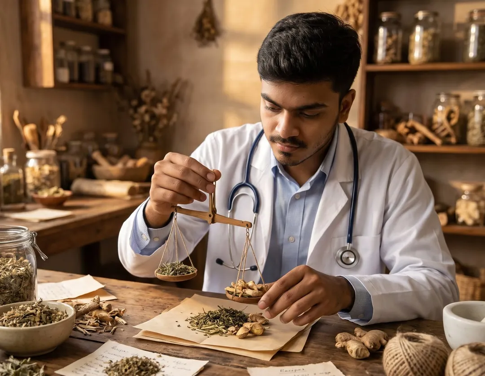

Virechana in Patna

At Sabka Ved Wellness, where much of our work concerns gut and metabolic health, virechana is the classical procedure we discuss most often. It is gentler and more widely applicable than vamana, which is why the texts call it suitable for a larger range of people. Gentler does not mean casual. Virechana is a planned, monitored medical procedure with a preparation phase before and a recovery diet after, and it is not the same as taking a laxative.
The meaning of virechana
Virechana (विरेचन) comes from vi (apart, away) and rech (to empty or expel). It is the expulsion of doshas through the lower route, the bowel. Ayurveda considers the small intestine and the area around the liver to be the principal seat of pitta, so the downward route is the natural exit for excess pitta.
History and textual basis
The Charaka Samhita treats virechana as one of the five purificatory procedures and lists purgative herbs in detail in the Kalpa Sthana, including trivrit (Operculina turpethum), aragvadha (Cassia fistula), danti, haritaki and castor oil. The Siddhi Sthana discusses technique, outcomes and complications. The Sushruta Samhita and Ashtanga Hridaya describe the same procedure with variations. The texts grade the outcome by the number of motions (vega) and describe a graded diet afterwards based on how strong the purgation was. Autumn (sharad) is named as the natural season for virechana, when pitta is said to be aggravated.
Modern Ayurvedic hospitals have standardised the steps, monitoring charts and safety thresholds, and virechana is one of the most frequently performed major procedures in Indian teaching institutions. That institutional record is documented. Claims of miraculous results passed on through word of mouth are not.
How it is understood to work
The dosha logic
As with vamana, oleation and sudation first loosen doshas from the tissues and bring them to the gut. A purgative is then given on an empty stomach in the morning, and the bowel is expected to clear in a series of movements, initially of faecal matter and then more watery content, ending, according to the texts, with kapha-like mucus, which is taken as the sign of complete purgation. Pitta-related complaints, such as burning, acidity, some skin conditions and heat-related disorders, are the classical indications.
What research shows
Several small clinical studies have been published, mostly in Indian Ayurvedic journals. A 2019 study in Ayu examined virechana in nineteen obese patients and studied changes in gut microbiota before and after the procedure. A 2012 study in people with bronchial asthma compared virechana followed by oral medicines with oral medicines alone and reported better outcomes in the virechana group. A 2013 study in diabetes found short-term reductions in blood sugar after vamana and virechana, without lasting control on their own. These studies are small, frequently unblinded and sometimes uncontrolled. They justify interest and further research; they do not prove that virechana treats any disease.
Bowel type and the choice of purgative
| Koshtha (bowel type) | Typical pattern | Classical approach |
|---|---|---|
| Mridu (soft) | Easy, frequent motions; loosens even with milk or grapes | Mild purgatives in small doses |
| Madhyama (medium) | Regular motions, neither loose nor hard | Moderate purgatives such as trivrit preparations |
| Krura (hard) | Constipated, dry, needs effort | Stronger purgatives, chosen carefully |
This is one reason two people in the same family can receive very different medicines on their virechana day. Getting the bowel type wrong risks either a weak, incomplete purgation or an excessive one.
Why virechana fits a gut and metabolic practice
Many patients who consult us in Patna come with long-standing acidity, bloating, irregular bowels, fatty liver on ultrasound, skin flare-ups or weight that will not shift. In Ayurvedic terms, these often point to disturbed agni and pitta in the gut. Virechana, when suitable, is the classical tool aimed at that area. It works best, in our experience, when it is part of a longer plan that includes diet correction and follow-up, rather than a one-time event.
Who may be considered
- Adults with pitta-dominant presentations, as judged by the doctor, including some chronic acidity, skin, liver-related and metabolic concerns.
- Patients who are not suited for vamana but need a major cleansing procedure.
- Selected healthy adults for seasonal cleansing, particularly after the monsoon.
Who should not have virechana
- Pregnant women, children and frail elderly people.
- People with diarrhoea, inflammatory bowel disease in flare, rectal bleeding, rectal prolapse or anal fissure in acute stage.
- Acute fever, acute infections, dehydration or severe weakness.
- Recent abdominal surgery, intestinal obstruction or known bowel narrowing.
- Uncontrolled diabetes, kidney disease, significant heart disease or electrolyte disturbances.
- Very emaciated or very obese patients unless specifically planned.
- Anyone who has just received a decoction enema.
Some prescribed medicines, including those for diabetes, blood pressure (especially diuretics) and heart rhythm, need particular attention on the virechana day because fluid and salt balance change. Never stop them on your own; the doctor will advise timing in consultation with your existing care where necessary.
How virechana is done at Sabka Ved Wellness
Assessment
Dr. Aditya Kunal assesses your constitution, bowel type (koshtha: soft, medium or hard), digestion and strength. Bowel type matters a great deal: someone with a soft bowel may need a mild purgative, while someone with a hard bowel needs a stronger one. Recent blood tests may be requested.
Preparation
Paachana if needed, then snehapana with medicated ghee for usually three to seven days until oleation is adequate. After that, typically three days of abhyanga and swedana, during which a light, slightly liquid diet is advised. This interval allows the doctrinal movement of doshas to the gut.
The virechana day (described for understanding)
- You come in on an empty stomach in the morning. Pulse, blood pressure and general state are recorded.
- The purgative medicine selected for your bowel type is given, often around mid-morning when kapha time has passed.
- You sip warm water in small amounts. Movements usually begin after one to three hours.
- Staff record the number and character of motions and check pulse, blood pressure, hydration and how you feel. Clean, private toilet access is essential and arranged.
- The doctor judges when purgation is complete and whether anything needs to be given to support or stop it.
- You rest. If movements are excessive, the doctor manages them; if they are insufficient, the plan is adjusted.
After virechana
Based on the strength of purgation, a samsarjana krama of three to seven days follows: rice water, thin gruel, thicker gruel, soft rice with moong soup, then gradual return to normal food. Heavy, oily, spicy and cold food, exertion, travel, daytime sleep and late nights are avoided during these days.
What to expect
Tiredness, hunger and mild cramping are common. Excessive purgation can lead to dehydration, giddiness and weakness, and inadequate purgation can leave a heavy, bloated feeling. Both are managed by the doctor, and both are reasons virechana is not done casually or unsupervised.
Why virechana is a programme, not a pill
The purgative itself is a small part of the cost. Days of medicated ghee, daily doctor reviews, preparatory abhyanga and swedana, staff time on the virechana day, private toilet facilities, hydration support and a planned recovery diet make up the real programme. We do not publish prices online; the duration and costs of your plan are explained at consultation.
Thinking about virechana?
Virechana is not a cure for any disease. For carefully selected patients, particularly those with pitta and gut-metabolic concerns, it is a central classical procedure. If you are wondering whether it suits you, request an appointment or book a consultation with Dr. Aditya Kunal online. Patients from outside Patna can begin with an online consultation.
Sources
- Virechana (therapeutic purgation), Charak Samhita online
- Chaturvedi A et al. A clinical study on Virechana Karma over the gut flora with special reference to obesity. Ayu, 2019
- Clinical effect of Virechana and Shamana Chikitsa in Tamaka Shwasa (bronchial asthma). Ayu, 2012
- Comparative study of Vamana and Virechana karma in controlling blood sugar levels in diabetes mellitus. Ayu, 2013
We also serve patients from


Preparation, therapy, recovery. In that order.


Related therapies
Pages that pair naturally with this one.


Questions about Virechana

No. Virechana follows days of oleation and sudation, uses a purgative chosen for your bowel type, is monitored on the day and is followed by a graded diet. A laxative is taken without any of this framework.
The classical texts grade outcomes by the number of motions, but the doctor judges completion by several signs and your condition, not a single number.
You stay at the centre until the doctor is satisfied that purgation is complete and you are stable. Plan for rest at home afterwards.
A graded diet starting with rice water and thin gruel, progressing to soft rice and moong soup and then normal food over several days. The exact plan depends on how strong the purgation was.
It depends on your symptoms and their stage. Active bleeding, fissures or inflammatory flare are reasons to avoid it. The doctor decides after examination.